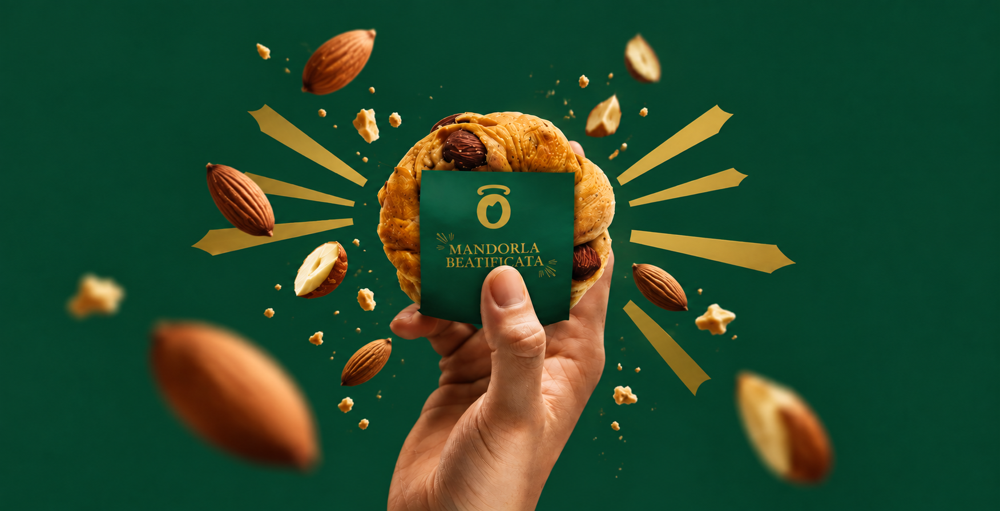
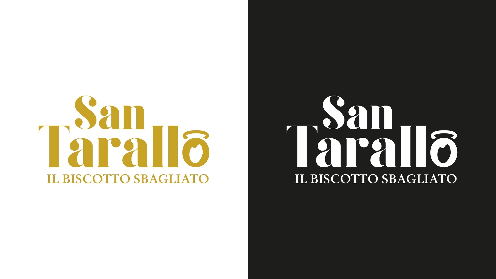
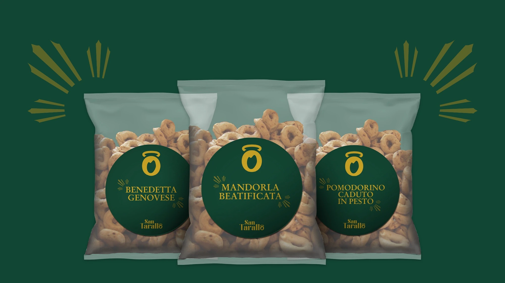
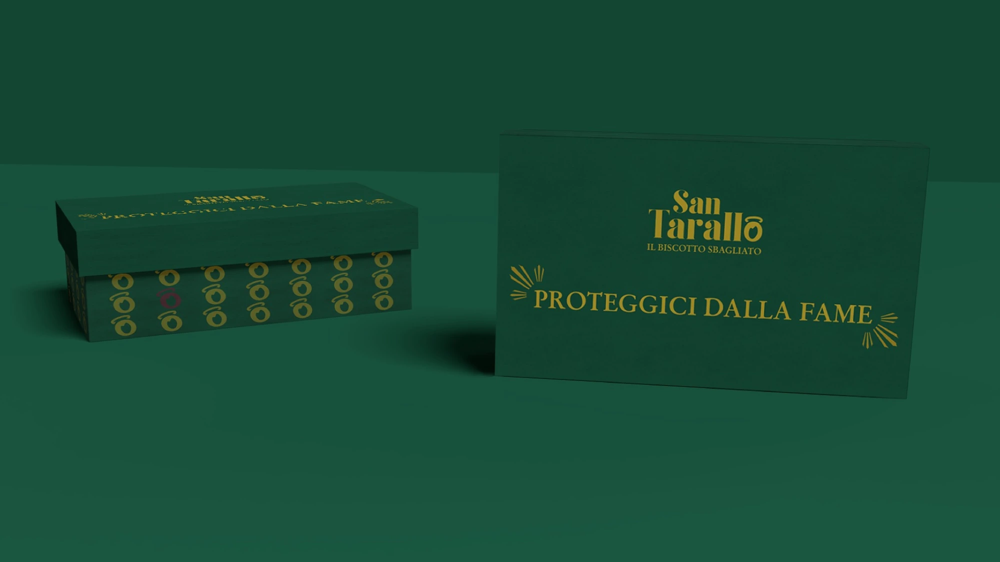
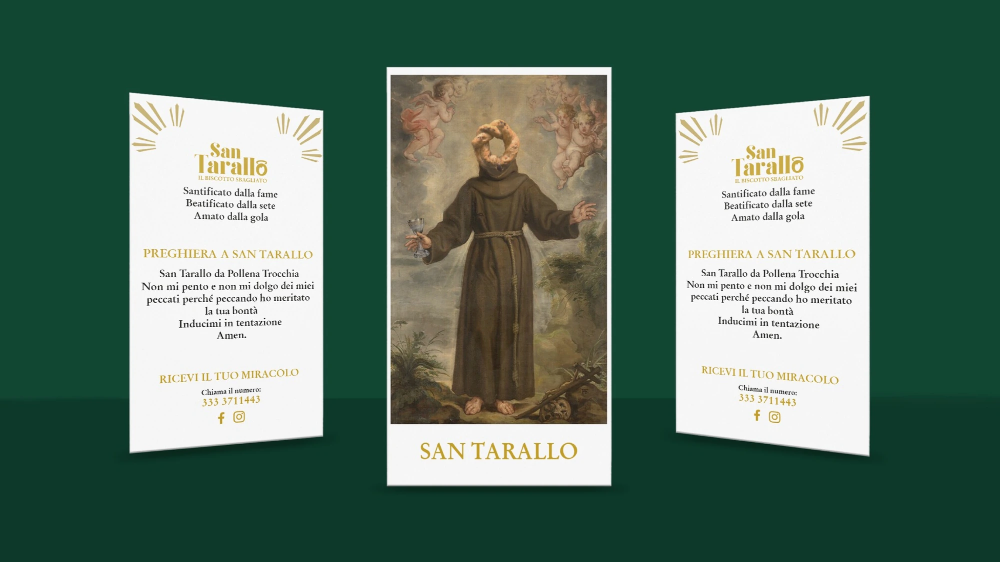
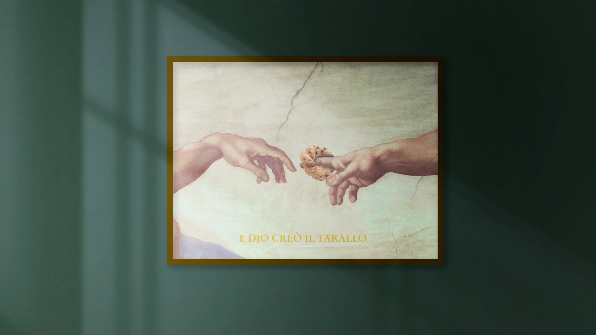
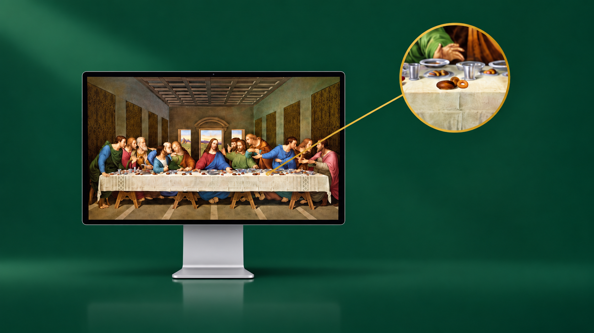

Branding / 01
SanTarallo
A playful identity for a Neapolitan classic, bringing together food, devotion and a little irreverence.

Brief
The aim was to give traditional Neapolitan taralli a distinctive identity, rooted in local culture and expressed through a playful visual and verbal language.
Brand concept
I built the concept around the meeting of the sacred and the everyday. The tarallo becomes a symbol of devotion, inspiring a fictional saint, a halo in the logo and a brand story centred on the pleasure of eating.
Creative direction
I paired deep green and gold with expressive serif lettering and religious imagery. The visual language feels ceremonial, while humorous copy brings it back to the everyday pleasures of food.
- Year
- 2023
- My role
- Brand design
- Tools
- Adobe Creative Cloud · Blender · Figma
- Deliverables
- Visual identity, packaging, promotional materials
Visual identity
The final “o” becomes a tarallo with a halo, creating a symbol that also works independently. Repeated patterns and radiating motifs extend the identity across packaging and printed materials.

Packaging & brand voice
I carried the concept into product labels, boxes and promotional materials. Flavour names such as “Mandorla Beatificata” and messages like “Proteggici dalla fame” make the brand’s voice part of the packaging itself.




Gamification
I translated San Tarallo’s playful identity into a gamified experience. By combining hidden taralli, religious artworks, rankings and branded rewards, the concept extends the brand beyond packaging and encourages customers to actively engage with its world.

Outcome
The resulting identity connects logo, packaging and storytelling through one recognisable idea. This project allowed me to explore how visual design and copywriting can work together to give a familiar product its own personality.
See also